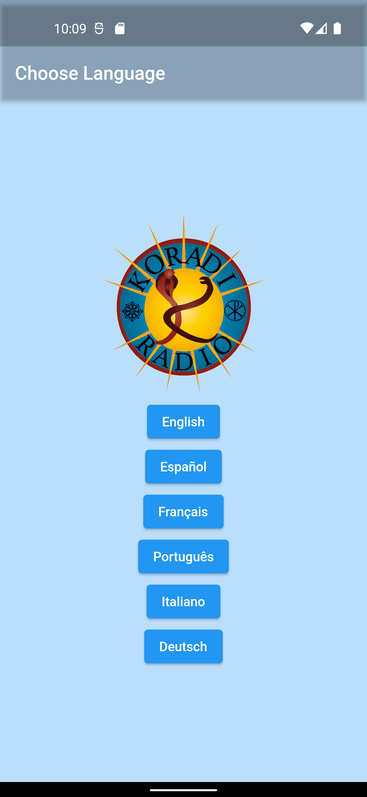

Koradi App
- The Koradi App is a Flutter project allowing users to interact with Koradi Radio. This application has been localized for six different languages and allows users to connect to a continuous audio stream originating from the Koradi Radio server. It implements a background audio service in order to continuously play media, even when the app is not in the foreground.
- The structure and syntax of the Flutter framework reminded me of SwiftUI and the Dart language bears resemblence to Swift in terms of overall syntax and support for optional types.
- I found it interesting that while Swift was originally designed by Apple as a more developer-friendly replacement for Objectiv-C, Dart was developed by Google around the same time but as an alternative to JavaScript.
- Dart initially received very little adoption from the development community until a few years ago when it was used to implement the Flutter framework.
-
Similar to other declarative UI frameworks, the entry point to a Flutter app exists within a
main()method that specifies the main app, in this caseKoradiApp. - In Flutter, almost everything that can be represented within the user interface is a widget. Widgets are similar to views in SwiftUI in that they are self-contained elements of the user interface that can be used and re-used within parent or child widgets. Information about application state can be passed from parent widget to child widgets, and across different components of the app by using keys.
-
KoradiApphas an attributehome:with a value ofWelcomethat has a parameter of typeaudioHandler. This means that when the application first starts, theWelcomewidget described below will be shown first, and it will receive anaudioHandlerobject that was initialized in the application'smain()method. This object is used to stream and play audio and keeps track of the audio stream's state across different widgets. -
The remaining code specifies how the widget will appear on a device. Widgets, such as
Scaffole, are able to contain child widgets, such asColumnandElevatedButton. -
Application navigation is facilitated using the
Navigatorclass. The.pushmethod "pushes" a new widget onto the application stack. The application navigation bar will then show a back arrow allowing the widget to be "popped" off of the stack, thereby returning to the prior widget. - The result of the code shown on the right is shown in the widget below:
- 
late AudioHandler audioHandler;
Future main() async {
WidgetsFlutterBinding.ensureInitialized();
final session = await AudioSession.instance;
await session.configure(const AudioSessionConfiguration.music());
audioHandler = await AudioService.init(
builder: () => AudioPlayerHandler(),
config: const AudioServiceConfig(
androidNotificationChannelId: 'com.ryanheise.myapp.channel.audio',
androidNotificationChannelName: 'Koradi Radio',
androidNotificationOngoing: true,
),
);
runApp(const KoradiApp());
}
class KoradiApp extends StatelessWidget {
const KoradiApp({Key? key}) : super(key: key);
@override
Widget build(BuildContext context) {
return MaterialApp(
debugShowCheckedModeBanner: false,
title: "Koradi Radio",
theme: ThemeData(
brightness: Brightness.light,
scaffoldBackgroundColor: Colors.blue[100],
),
darkTheme: ThemeData(
brightness: Brightness.dark,
),
themeMode: ThemeMode.system,
home: Welcome(
audioHandler: audioHandler,
));
}
}
class Welcome extends StatelessWidget {
var audioHandler;
MediaItem englishStream = const MediaItem(
id: "http://stream_url:/stream", title: "Koradi Radio Stream");
MediaItem espStream = const MediaItem(
id: "http://stream_url:/stream", title: "Transmisión de Radio Koradi");
Welcome({Key? key, this.audioHandler}) : super(key: key);
@override
Widget build(BuildContext context) {
return Scaffold(
appBar: AppBar(
title: Text("Choose Language"),
backgroundColor: Colors.transparent,
),
body: Column(
mainAxisAlignment: MainAxisAlignment.center,
crossAxisAlignment: CrossAxisAlignment.center,
children: [
const SizedBox(
width: double.infinity,
),
Column(
mainAxisAlignment: MainAxisAlignment.spaceEvenly,
crossAxisAlignment: CrossAxisAlignment.center,
children: [
Image.asset(
'assets/koradi.png',
height: 200,
width: 200,
),
ElevatedButton(
onPressed: () {
audioHandler.playMediaItem(englishStream);
Navigator.push(
context,
MaterialPageRoute(
builder: (context) => EnglishHome(
audioHandler: audioHandler,
)));
},
child: Text("English"),
),
ElevatedButton(
onPressed: () {
audioHandler.playMediaItem(espStream);
Navigator.push(
context,
MaterialPageRoute(
builder: (context) => EspHome(
audioHandler: audioHandler,
)));
},
child: Text("Español")),
ElevatedButton(
onPressed: () {
launch("http://koradi.org/fr/radio-koradi/");
},
child: Text("Français"),
),
ElevatedButton(
onPressed: () {
launch("http://koradi.org/po/radio-koradi/");
},
child: Text("Português"),
),
ElevatedButton(
onPressed: () {
launch("http://koradi.org/it/radio-koradi/");
},
child: Text("Italiano"),
),
ElevatedButton(
onPressed: () {
launch("http://koradi.org/de/koradi-radio/");
},
child: Text("Deutsch"),
),
]),
]),
);
}
}
Download the App